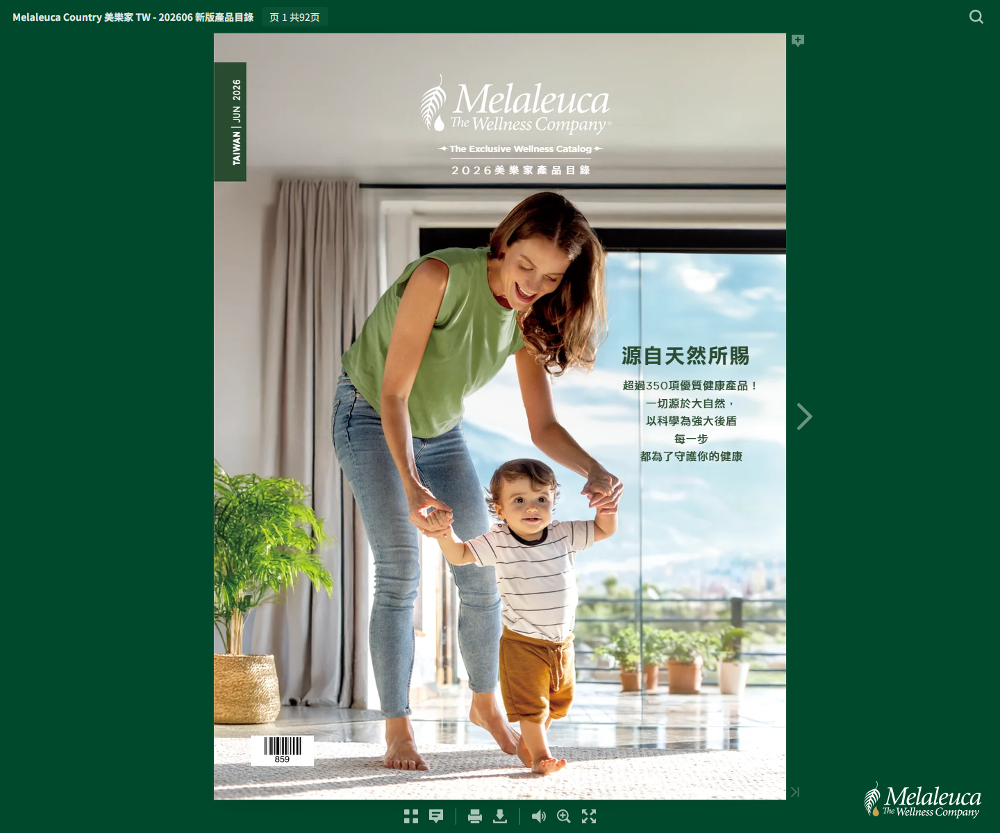

先看生活情境
用居家、健康、保養與日常補給來分類，比逐頁翻找更快找到需求。
2026 最新版產品目錄
從營養補充、居家清潔到個人保養，將 92 頁產品目錄整理成清楚的一頁式網站，讓第一次認識美樂家的朋友也能快速找到重點。

用居家、健康、保養與日常補給來分類，比逐頁翻找更快找到需求。
主視覺採用原始翻頁書畫面，讓網站版和官方目錄保持連結。
一頁式銷售頁節奏更適合手機閱讀、社群分享與後續客服諮詢。
保留翻頁書的視覺質感，改成更適合手機與廣告流量的一頁式架構。
日常補給、健康維持與家庭營養規劃。
以更安心的方式處理廚房、衣物與環境清潔。
從清潔、保濕到日常護理，建立簡單好持續的照顧流程。
把常用消耗品變成固定補貨清單，降低每次選購成本。
網站版先講清楚「為什麼看、怎麼看、先看哪裡」，再把人帶回完整目錄，適合做社群貼文、廣告連結或私訊導購入口。
不會。網站版是導覽與銷售頁入口，完整規格與頁面仍建議回到原始翻頁書閱讀。
可以，頁面已用手機閱讀優先設計，適合搭配貼文、私訊與客服導購使用。
可以。現在先保留「建立諮詢清單」區塊，之後能接 Google 表單、LINE、CRM 或正式購物頁。
看完網站版後，再回到完整目錄確認細節，會比直接翻完整本更快。